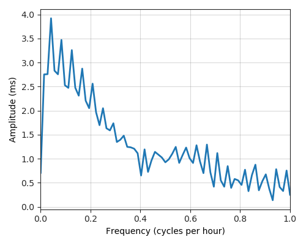

---
layout: default
title: Last-mile delay survey / 2018-09-01 / AS37611
---
AS37611, Afrihost, ZA
Summary
- Daily last-mile fluctuations: severe
- Number of probes: 5
- APNIC eyeball rank: 325
- Daily fluctuations: True
- Main frequency: 0.0417
- Average peak-to-peak amplitude: 3.92ms
Aggregated last-mile queuing delay
Periodogram

24H profile
Probes' last-mile RTT